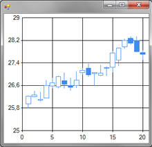

FSharp.Charting: An F# Charting Library
The FSharp.Charting library (FSharp.Charting.dll) implements charting suitable for use from F# scripting.
|  |  |
 |
PM> Install-Package FSharp.Charting
Alternatively, you can download the source as a ZIP file or as a [binary release as a ZIP file][binary].
Features
- Many chart types: Area, Bar, BoxPlot, Bubble, Candlestick, Column, Doughnut, ErrorBar, FastLine, FastPoint, Funnel, Kagi, Line and more.
- 2D and pseudo-3D charting.
- Create charts directly from F# data.
- Use either fluent or pipelined chart specifications.
- Create updating 'LiveChart' charts from F# or Rx observables.
- Can be used in conjunction with the FSharp.Data library.
Limitations:
- Windows-only. This may change (i.e. cross-platform and web charting for a subset of chart specifications).
Documentation
The documentation is automatically generated from *.fsx files in the examples folder.
If you find a typo, please submit a pull request!
- FSharp.Charting is the documentation home.
Contributing
The project is hosted on GitHub where you can report issues, fork the project and submit pull requests. If you're adding new public API, please also contribute examples that can be turned into a documentation.
If you want to discuss an issue or feature that you want to add the to the library, then you can submit an issue or feature request via Github or you can send an email to the F# open source mailing list.
For more information about the library architecture, organization and more see the contributing page.
Library philosophy
FSharp.Charting uses simple, declarative chart specifications.
On Windows, FSharp.Charting is implemented using the Data Visualization charting controls available on Windows in .NET 4.x, with particular focus on 'making the simple things simple'.
FSharp.Charting is designed so that the same charting specifications can be supported when using different charting implementations. For example, the a href="http://tryfsharp.org"Try F# charts use similar charting specifications, implemented using in HTML5 using Dojo Charts.
Library license
The library is available under Apache 2.0. For more information see the License file in the GitHub repository. In summary, this means that you can use the library for commercial purposes, fork it, modify it as you wish.